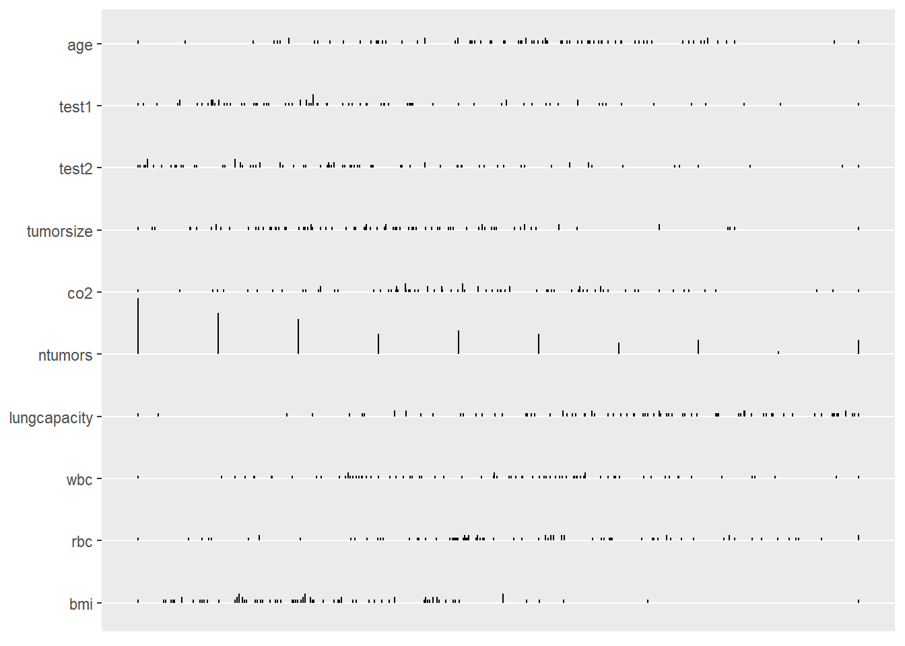

3.1 Data Cleansing
3.1.1 변수 요약
library(tidyverse)- 각 변수들의 분포에 대한 간결한 요약정보에 익숙해야 한다. 그 이유는 다음과 같다:
- 표본의 특성 파악
- 의심이 가는 값들의 확인
base 패키지의 summary() 함수는
- 수치 변수에 대한 요약 통계량, factor 변수에 대한 빈도 등을 제공한다.
- 문자 벡터들은 요약되지 않은채 남겨진다.
3.1.2 데이터 세트
d <- read_csv("data3/patient_pt1_dm.csv"); d##
## -- Column specification --------------------------------------------------------
## cols(
## .default = col_double(),
## hospital = col_character(),
## docid = col_character(),
## dis_date = col_character(),
## sex = col_character(),
## familyhx = col_character(),
## smokinghx = col_character(),
## cancerstage = col_character(),
## wbc = col_character()
## )
## i Use `spec()` for the full column specifications.## # A tibble: 120 x 24
## hospital hospid docid dis_date sex age test1 test2 pain tumorsize co2
## <chr> <dbl> <chr> <chr> <chr> <dbl> <dbl> <dbl> <dbl> <dbl> <dbl>
## 1 UCLA 1 1-1 6-Sep-09 male 65.0 3.70 8.09 4 68.0 1.53
## 2 UCLA 1 1-1 7-Jan-11 fema~ 53.9 2.63 0.803 2 64.7 1.68
## 3 UCLA 1 1-1 4-Sep-10 male 41.4 -99 2.13 3 86.4 1.45
## # ... with 117 more rows, and 13 more variables: wound <dbl>, mobility <dbl>,
## # ntumors <dbl>, remission <dbl>, lungcapacity <dbl>, married <dbl>,
## # familyhx <chr>, smokinghx <chr>, cancerstage <chr>, lengthofstay <dbl>,
## # wbc <chr>, rbc <dbl>, bmi <dbl>3.1.3 데이터 세트의 통계적 요약 정보
summary(d)## hospital hospid docid dis_date
## Length:120 Min. :1.000 Length:120 Length:120
## Class :character 1st Qu.:1.000 Class :character Class :character
## Mode :character Median :1.000 Mode :character Mode :character
## Mean :1.483
## 3rd Qu.:2.000
## Max. :2.000
## sex age test1 test2
## Length:120 Min. : 34.19 Min. :-99.000 Min. :-99.000
## Class :character 1st Qu.: 47.75 1st Qu.: 1.560 1st Qu.: 2.249
## Mode :character Median : 51.83 Median : 3.107 Median : 4.162
## Mean : 53.59 Mean : -1.989 Mean : -1.226
## 3rd Qu.: 55.01 3rd Qu.: 5.707 3rd Qu.: 6.166
## Max. :357.89 Max. : 12.416 Max. : 17.228
## pain tumorsize co2 wound
## Min. :1.000 Min. : 49.10 Min. :-98.0000 Min. :2.000
## 1st Qu.:4.000 1st Qu.: 62.18 1st Qu.: 1.4954 1st Qu.:5.000
## Median :5.000 Median : 68.23 Median : 1.5859 Median :6.000
## Mean :5.325 Mean : 70.08 Mean : -0.8901 Mean :5.592
## 3rd Qu.:6.000 3rd Qu.: 77.48 3rd Qu.: 1.6860 3rd Qu.:7.000
## Max. :9.000 Max. :109.01 Max. : 1.9424 Max. :9.000
## mobility ntumors remission lungcapacity
## Min. :2.000 Min. :0.00 Min. :0.00 Min. :-99.0000
## 1st Qu.:5.000 1st Qu.:1.00 1st Qu.:0.00 1st Qu.: 0.5141
## Median :6.000 Median :2.00 Median :0.00 Median : 0.7457
## Mean :6.033 Mean :3.15 Mean :0.35 Mean :-18.3280
## 3rd Qu.:7.000 3rd Qu.:5.00 3rd Qu.:1.00 3rd Qu.: 0.8721
## Max. :9.000 Max. :9.00 Max. :1.00 Max. : 0.9982
## married familyhx smokinghx cancerstage
## Min. :0.0000 Length:120 Length:120 Length:120
## 1st Qu.:0.0000 Class :character Class :character Class :character
## Median :1.0000 Mode :character Mode :character Mode :character
## Mean :0.6333
## 3rd Qu.:1.0000
## Max. :1.0000
## lengthofstay wbc rbc bmi
## Min. :3.000 Length:120 Min. :4.360 Min. :18.45
## 1st Qu.:4.000 Class :character 1st Qu.:4.825 1st Qu.:24.51
## Median :5.000 Mode :character Median :4.978 Median :27.82
## Mean :5.308 Mean :4.970 Mean :29.38
## 3rd Qu.:6.000 3rd Qu.:5.150 3rd Qu.:34.31
## Max. :8.000 Max. :5.535 Max. :58.003.1.4 Hmisc 패키지의 describe() 함수
Hmisc패키지의describe()함수는 데이터 프레임에 있는 모든 변수에 대한 다른 요약 통계량을 제공한다.제공되는 정보는 변수의 데이터 형(data type)과 유일 값(distinct values)의 수에 따라 다르다.
중요 특징:
- 20개 보다 적은 수의 유일값을 갖는 변수들의 도수분포표
- 연속 변수에 대한 보다 자세한 백분위수(quantiles)
- 이진 변수에 대한 갯수와 비율
- 모든 변수의 결측치(
NA) 갯수
describe()함수의 결과는 변수들이 타당한 값과 분포를 갖는지를 빠르게 결정하는데 사용될 수 있다.
3.1.4.1 Hmisc 패키지 설치
# install.packages("Hmisc")
library(Hmisc)## Loading required package: lattice## Loading required package: survival## Loading required package: Formula##
## Attaching package: 'Hmisc'## The following objects are masked from 'package:dplyr':
##
## src, summarize## The following objects are masked from 'package:base':
##
## format.pval, units3.1.4.2 describe() 함수
데이터 세트에 대한 상세한 요약 정보를 보여 준다.
describe(d)## d
##
## 24 Variables 120 Observations
## --------------------------------------------------------------------------------
## hospital
## n missing distinct
## 120 0 2
##
## Value UCLA UCSF
## Frequency 62 58
## Proportion 0.517 0.483
## --------------------------------------------------------------------------------
## hospid
## n missing distinct Info Mean Gmd
## 120 0 2 0.749 1.483 0.5036
##
## Value 1 2
## Frequency 62 58
## Proportion 0.517 0.483
## --------------------------------------------------------------------------------
## docid
## n missing distinct
## 120 0 22
##
## lowest : 1-1 1-100 1-11 1-21 1-22 , highest: 2-177 2-178 2-188 2-201 2-216
## --------------------------------------------------------------------------------
## dis_date
## n missing distinct
## 120 0 104
##
## lowest : 1-Jul-09 10-Jun-09 10-Jun-10 11-Apr-10 11-Dec-09
## highest: 9-Apr-10 9-Feb-09 9-Feb-10 9-Jun-10 9-May-10
## --------------------------------------------------------------------------------
## sex
## n missing distinct
## 120 0 3
##
## Value 12.2 female male
## Frequency 1 74 45
## Proportion 0.008 0.617 0.375
## --------------------------------------------------------------------------------
## age
## n missing distinct Info Mean Gmd .05 .10
## 120 0 117 1 53.59 11.92 40.86 41.52
## .25 .50 .75 .90 .95
## 47.75 51.83 55.01 58.61 59.65
##
## lowest : 34.19229 35.31930 37.25225 39.61641 40.03724
## highest: 63.93238 64.16432 64.96824 65.80417 357.89001
##
## Value 35 40 45 50 55 60 65 360
## Frequency 3 10 16 38 35 13 4 1
## Proportion 0.025 0.083 0.133 0.317 0.292 0.108 0.033 0.008
##
## For the frequency table, variable is rounded to the nearest 5
## --------------------------------------------------------------------------------
## test1
## n missing distinct Info Mean Gmd .05 .10
## 120 0 111 1 -1.989 14.11 -99.0000 0.5809
## .25 .50 .75 .90 .95
## 1.5597 3.1065 5.7067 7.9931 9.5583
##
## lowest : -99.0000000 0.1048958 0.1927608 0.4293420 0.5155185
## highest: 9.7981329 10.2903990 10.4685400 11.0714440 12.4163920
##
## Value -99 0 1 2 3 4 5 6 7 8 9
## Frequency 7 3 20 17 21 12 8 11 6 7 1
## Proportion 0.058 0.025 0.167 0.142 0.175 0.100 0.067 0.092 0.050 0.058 0.008
##
## Value 10 11 12
## Frequency 5 1 1
## Proportion 0.042 0.008 0.008
##
## For the frequency table, variable is rounded to the nearest 1
## --------------------------------------------------------------------------------
## test2
## n missing distinct Info Mean Gmd .05 .10
## 120 0 111 1 -1.226 14.59 -99.0000 0.7881
## .25 .50 .75 .90 .95
## 2.2494 4.1620 6.1657 8.9973 10.9861
##
## lowest : -99.0000000 0.5807591 0.6179262 0.6571499 0.7485080
## highest: 11.4315750 12.4493730 14.2252270 14.5365420 17.2275810
##
## Value -99 1 2 3 4 5 6 7 8 9 10
## Frequency 7 15 12 19 16 15 9 6 6 6 1
## Proportion 0.058 0.125 0.100 0.158 0.133 0.125 0.075 0.050 0.050 0.050 0.008
##
## Value 11 12 14 15 17
## Frequency 4 1 1 1 1
## Proportion 0.033 0.008 0.008 0.008 0.008
##
## For the frequency table, variable is rounded to the nearest 1
## --------------------------------------------------------------------------------
## pain
## n missing distinct Info Mean Gmd
## 120 0 9 0.961 5.325 1.742
##
## lowest : 1 2 3 4 5, highest: 5 6 7 8 9
##
## Value 1 2 3 4 5 6 7 8 9
## Frequency 1 2 11 21 33 25 18 5 4
## Proportion 0.008 0.017 0.092 0.175 0.275 0.208 0.150 0.042 0.033
## --------------------------------------------------------------------------------
## tumorsize
## n missing distinct Info Mean Gmd .05 .10
## 120 0 117 1 70.08 12.92 53.48 55.97
## .25 .50 .75 .90 .95
## 62.18 68.23 77.48 84.06 92.54
##
## lowest : 49.09861 50.28009 50.50217 51.65727 53.19937
## highest: 98.05510 98.32850 98.70570 102.69671 109.00956
## --------------------------------------------------------------------------------
## co2
## n missing distinct Info Mean Gmd .05 .10
## 120 0 115 1 -0.8901 5.03 1.390 1.440
## .25 .50 .75 .90 .95
## 1.495 1.586 1.686 1.756 1.793
##
## lowest : -98.000000 1.327440 1.362927 1.372113 1.391310
## highest: 1.810847 1.820266 1.905606 1.920025 1.942401
##
## Value -98 1 2
## Frequency 3 29 88
## Proportion 0.025 0.242 0.733
##
## For the frequency table, variable is rounded to the nearest 1
## --------------------------------------------------------------------------------
## wound
## n missing distinct Info Mean Gmd
## 120 0 8 0.958 5.592 1.767
##
## lowest : 2 3 4 5 6, highest: 5 6 7 8 9
##
## Value 2 3 4 5 6 7 8 9
## Frequency 5 10 12 23 36 22 10 2
## Proportion 0.042 0.083 0.100 0.192 0.300 0.183 0.083 0.017
## --------------------------------------------------------------------------------
## mobility
## n missing distinct Info Mean Gmd
## 120 0 8 0.969 6.033 2.264
##
## lowest : 2 3 4 5 6, highest: 5 6 7 8 9
##
## Value 2 3 4 5 6 7 8 9
## Frequency 6 4 19 19 28 15 5 24
## Proportion 0.050 0.033 0.158 0.158 0.233 0.125 0.042 0.200
## --------------------------------------------------------------------------------
## ntumors
## n missing distinct Info Mean Gmd .05 .10
## 120 0 10 0.981 3.15 3.101 0 0
## .25 .50 .75 .90 .95
## 1 2 5 8 9
##
## lowest : 0 1 2 3 4, highest: 5 6 7 8 9
##
## Value 0 1 2 3 4 5 6 7 8 9
## Frequency 23 21 19 9 12 11 7 5 5 8
## Proportion 0.192 0.175 0.158 0.075 0.100 0.092 0.058 0.042 0.042 0.067
## --------------------------------------------------------------------------------
## remission
## n missing distinct Info Sum Mean Gmd
## 120 0 2 0.683 42 0.35 0.4588
##
## --------------------------------------------------------------------------------
## lungcapacity
## n missing distinct Info Mean Gmd .05 .10
## 120 0 96 0.995 -18.33 31.26 -99.0000 -99.0000
## .25 .50 .75 .90 .95
## 0.5142 0.7457 0.8721 0.9573 0.9790
##
## lowest : -99.0000000 -98.0000000 0.2949074 0.3264440 0.3450253
## highest: 0.9856416 0.9864109 0.9924814 0.9940955 0.9982018
##
## Value -99.0 -98.0 0.2 0.4 0.6 0.8 1.0
## Frequency 20 3 1 6 21 46 23
## Proportion 0.167 0.025 0.008 0.050 0.175 0.383 0.192
##
## For the frequency table, variable is rounded to the nearest 0.2
## --------------------------------------------------------------------------------
## married
## n missing distinct Info Sum Mean Gmd
## 120 0 2 0.697 76 0.6333 0.4683
##
## --------------------------------------------------------------------------------
## familyhx
## n missing distinct
## 120 0 3
##
## Value -99 no yes
## Frequency 6 97 17
## Proportion 0.050 0.808 0.142
## --------------------------------------------------------------------------------
## smokinghx
## n missing distinct
## 120 0 4
##
## Value -99 current former never
## Frequency 6 26 22 66
## Proportion 0.050 0.217 0.183 0.550
## --------------------------------------------------------------------------------
## cancerstage
## n missing distinct
## 120 0 4
##
## Value I II III IV
## Frequency 40 54 17 9
## Proportion 0.333 0.450 0.142 0.075
## --------------------------------------------------------------------------------
## lengthofstay
## n missing distinct Info Mean Gmd
## 120 0 6 0.933 5.308 1.271
##
## lowest : 3 4 5 6 7, highest: 4 5 6 7 8
##
## Value 3 4 5 6 7 8
## Frequency 5 29 29 40 15 2
## Proportion 0.042 0.242 0.242 0.333 0.125 0.017
## --------------------------------------------------------------------------------
## wbc
## n missing distinct
## 120 0 116
##
## lowest : 3671.880371 4176.054199 4201.741211 4238.355957 4331.902344
## highest: 7999.091309 8340.71582 8415.605469 8567.246094 not assessed
## --------------------------------------------------------------------------------
## rbc
## n missing distinct Info Mean Gmd .05 .10
## 120 0 117 1 4.97 0.2885 4.526 4.606
## .25 .50 .75 .90 .95
## 4.825 4.978 5.150 5.285 5.353
##
## lowest : 4.359662 4.436482 4.456108 4.465468 4.470100
## highest: 5.441604 5.442614 5.459067 5.502604 5.535052
## --------------------------------------------------------------------------------
## bmi
## n missing distinct Info Mean Gmd .05 .10
## 120 0 117 1 29.38 7.278 20.71 22.07
## .25 .50 .75 .90 .95
## 24.51 27.82 34.31 37.75 40.71
##
## lowest : 18.44992 18.68505 20.07485 20.17994 20.49195
## highest: 42.84858 44.04223 46.50746 52.30723 58.00000
## --------------------------------------------------------------------------------3.1.5 의심스러운 값
여기에 우리가 정확하다고 확신할 수 없는 몇 몇 변수의 값들이 있다:
describe(d[,c("age", "sex", "test1")])## d[, c("age", "sex", "test1")]
##
## 3 Variables 120 Observations
## --------------------------------------------------------------------------------
## age
## n missing distinct Info Mean Gmd .05 .10
## 120 0 117 1 53.59 11.92 40.86 41.52
## .25 .50 .75 .90 .95
## 47.75 51.83 55.01 58.61 59.65
##
## lowest : 34.19229 35.31930 37.25225 39.61641 40.03724
## highest: 63.93238 64.16432 64.96824 65.80417 357.89001
##
## Value 35 40 45 50 55 60 65 360
## Frequency 3 10 16 38 35 13 4 1
## Proportion 0.025 0.083 0.133 0.317 0.292 0.108 0.033 0.008
##
## For the frequency table, variable is rounded to the nearest 5
## --------------------------------------------------------------------------------
## sex
## n missing distinct
## 120 0 3
##
## Value 12.2 female male
## Frequency 1 74 45
## Proportion 0.008 0.617 0.375
## --------------------------------------------------------------------------------
## test1
## n missing distinct Info Mean Gmd .05 .10
## 120 0 111 1 -1.989 14.11 -99.0000 0.5809
## .25 .50 .75 .90 .95
## 1.5597 3.1065 5.7067 7.9931 9.5583
##
## lowest : -99.0000000 0.1048958 0.1927608 0.4293420 0.5155185
## highest: 9.7981329 10.2903990 10.4685400 11.0714440 12.4163920
##
## Value -99 0 1 2 3 4 5 6 7 8 9
## Frequency 7 3 20 17 21 12 8 11 6 7 1
## Proportion 0.058 0.025 0.167 0.142 0.175 0.100 0.067 0.092 0.050 0.058 0.008
##
## Value 10 11 12
## Frequency 5 1 1
## Proportion 0.042 0.008 0.008
##
## For the frequency table, variable is rounded to the nearest 1
## --------------------------------------------------------------------------------age:360sex:12.2test1:-99
3.1.6 describe()함수의 결과의 시각화
describe()함수의 결과들은plot()함수로 다음과 같이 시각화할 수 있다:- 명목 변수의 도수에 대한 점 그림(dot plot)
- 연속 변수의 분포에 대한 스파이크 히스토그램(spike histograms)
이러한 그림들은 변수의 분포에 대한 검토와 의심이 가는 데이터를 발견하는데 이용된다.
점 그림에서 명목 변수에 대한 의심이 가는 데이터의 라벨(아래의 그림에서
sex,familyhx와smokinghx변수들)들을 찾아보자.히스토그램에서는 각 히스토그램은 자체 척도를 가지고 있으며, 묶음 형태(bunched-up)의 히스토그램은 종종 극단치가 존재함을 알려준다(
age,test1,test2,co2와lungcapacity등의 변수들).
win.graph(12,8)
par(mfrow=c(2,1))
plot(describe(d))## $Categorical
##
## $Continuous
3.1.7 의심스러운 값을 결측치로 바꾸기
예제 데이터 세트의 요약정보의 결과와
describe()함수 결과의 그래프는 여러 개의 의심스러운 값들이 있음을 알려주고 있다:age변수는 데이터 입력 에러로 보이는 357.89001 값이 있다.sex변수는 데이터 입력 에러로 보이는 “12.2”값이 있다.test1,test2,lungcapacity,smokinghx, 그리고familyhx변수 등은 결측치 코드인-99를 가지고 있다.co2와lungcapacity변수는 또 다른 결측치 코드인-98값을 가지고 있다.wbc변수는 수치 변수인 것 같은데, R이 문자로 읽어들이게 하는 “not assessed” 값을 가지고 있다.
우리는 의심스러운 값들에 대하여 그 대체 값들을 알 수 없기때문에 R에서 결측치를 나타내는
NA로 변경할 것이다.
주의 : 자주 데이터 세트들은 결측치의 유형에 따라 결측치 값들을 구분하고 있다. 예를 들어, -99는 “결측치“, -98은 “답변 거부“” 등으로 처리하는 것을 들 수 있다. 분석의 목적을 위해서는 이 두 경우 모두 NA로 처리하면 된다. 그렇지만 결측치 값들을 구분하고자 하는 경우에는 memisc 패키지의 as.itemI) 함수를 참고하기 바란다.
- 데이터 입력 에러에 대하여
NA값으로 대체하기 위해 논리적 서브세팅(logical subsetting)을 이용할 수 있다:
# change all impossible age values to NA
# assume all adults in this dataset
d$age[d$age<18 | d$age>120] <- NA
# remember to use quotes for character variables
d$sex[d$sex == "12.2"] <- NA이제 모든 -99, -98 그리고 not assessed 값들을 모두 NA로 바꿔보자.
d[d==-99] <- NA
d[d==-98] <- NA
d[d=="not assessed"] <- NA
d## # A tibble: 120 x 24
## hospital hospid docid dis_date sex age test1 test2 pain tumorsize co2
## <chr> <dbl> <chr> <chr> <chr> <dbl> <dbl> <dbl> <dbl> <dbl> <dbl>
## 1 UCLA 1 1-1 6-Sep-09 male 65.0 3.70 8.09 4 68.0 1.53
## 2 UCLA 1 1-1 7-Jan-11 fema~ 53.9 2.63 0.803 2 64.7 1.68
## 3 UCLA 1 1-1 4-Sep-10 male 41.4 NA 2.13 3 86.4 1.45
## # ... with 117 more rows, and 13 more variables: wound <dbl>, mobility <dbl>,
## # ntumors <dbl>, remission <dbl>, lungcapacity <dbl>, married <dbl>,
## # familyhx <chr>, smokinghx <chr>, cancerstage <chr>, lengthofstay <dbl>,
## # wbc <chr>, rbc <dbl>, bmi <dbl>예를 들어, 다음의 구문은 df 데이터 세트에 있는 모든a 값을 b값으로 바꾸는 것을 보여준다:
df <- data.frame(a=c("a", "c", "f"), b=c("d", "a", "c"))
df[df=="a"] <- "b"
df## a b
## 1 b d
## 2 c b
## 3 f c3.1.8 NA가 없는 완전한 데이터
complete.cases(x) 함수는 x의 행 각각에 누락된 데이터가 없는(NA가 존재하지 않는 데이터, complete cases)지를 확인해주는 논리값(TRUE/FALSE) 벡터를 반환한다. 해당 행 전체에 누락된 데이터가 없다면 TRUE값을 반환하고, 누락된 데이터가 존재한다면 FALSE를 반환해준다.
이 논리 벡터의 합은 complete cases의 갯수를 나타낸다.
3.1.8.1 결측치가 없는 데이터
complete.cases(d)## [1] TRUE TRUE FALSE TRUE FALSE TRUE TRUE TRUE FALSE TRUE TRUE FALSE
## [13] TRUE TRUE TRUE FALSE TRUE TRUE TRUE TRUE TRUE FALSE TRUE TRUE
## [25] TRUE TRUE FALSE TRUE FALSE TRUE TRUE FALSE FALSE TRUE TRUE FALSE
## [37] TRUE FALSE TRUE FALSE TRUE TRUE TRUE TRUE TRUE FALSE FALSE TRUE
## [49] FALSE TRUE TRUE TRUE FALSE TRUE TRUE FALSE TRUE TRUE FALSE FALSE
## [61] TRUE TRUE TRUE TRUE TRUE TRUE FALSE TRUE TRUE FALSE TRUE FALSE
## [73] TRUE FALSE TRUE TRUE FALSE TRUE TRUE TRUE TRUE FALSE FALSE FALSE
## [85] TRUE FALSE TRUE TRUE TRUE TRUE TRUE FALSE TRUE TRUE FALSE TRUE
## [97] TRUE TRUE TRUE TRUE FALSE FALSE FALSE TRUE TRUE TRUE FALSE TRUE
## [109] FALSE TRUE TRUE FALSE TRUE TRUE FALSE TRUE TRUE TRUE TRUE TRUE3.1.8.2 결측치가 아닌 데이터의 갯수
sum(complete.cases(d))## [1] 823.1.8.3 결측치가 없는 데이터 세트 생성
d_comp <- d[complete.cases(d),]3.1.9 데이터 정제 후의 describe()함수 결과 그림
describe() 함수 결과의 그림은 이제 더 나아 보인다. 점 그림에 의심이 가는 데이터 라벨이 없고 또 히스토그램은 아주 잘 분산되어 있다.
색은 그런 변수들의 결측치 수를 보여준다.
3.1.9.1 $Categorical
범주형 변수(factor)에 대한 시각화
plot(describe(d), which="categorical")3.1.9.2 $Continuous
수치형 변수(numeric)에 대한 시각화
plot(describe(d_comp), which="continuous")